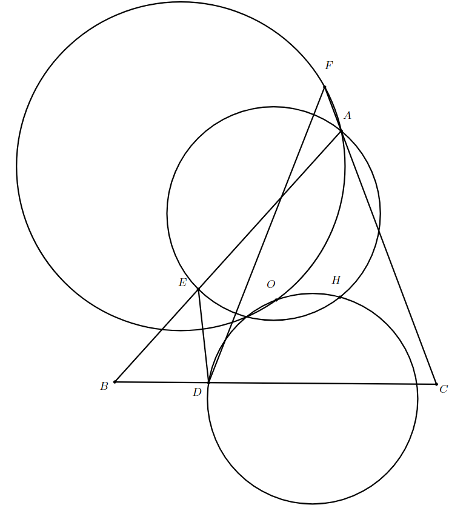

一、填空题：本大题共8小题，每小题8分，满分64分。
二、解答题：本大题共3小题，满分56分。解答应写出文字说明、证明过程或演算步骤。
（本题满分16分）
已知双曲线 $\Gamma$：$x^2-\dfrac{y^2}{3}=1$，是否存在以原点为圆心的定圆 $\Omega$，使得对 $\Gamma$ 上任一点 $A$（$A$ 在 $\Omega$ 外），过 $A$ 作 $\Omega$ 的两条切线 $AB$、$AC$（其中 $B$、$C$ 分别是两切线与 $\Gamma$ 的另一个交点），总有 $|AB|=|AC|$。若存在这样的定圆 $\Omega$，求出其方程；若不存在，请说明理由。（本题满分20分）
已知 $a\ge b\ge c\ge d>0$，$a+b+c+d=5$，$\dfrac{1}{a}+\dfrac{1}{b}+\dfrac{1}{c}+\dfrac{1}{d}=4$，试求 $\dfrac{a}{d}$ 的最小值。（本题满分20分）
设复数 $a$、$b$、$c$ 满足：对任意模不超过1的复数 $z$，都有 $|az^2+bz+c|\le1$，试求 $|a|+|b|+|c|$ 的最大值。一、（本题满分40分）
已知 $a_1,a_2,\dots,a_n\in\mathbb{R}^+$，$\sum_{i=1}^n a_i=n$，求证： \[ \sum_{i=1}^n \dfrac{a_i}{a_{i+1}^2+2025a_{i+1}} \ge \dfrac{n^2}{2026\left(\sum_{i=1}^n a_i a_{i+1}\right)} \] 这里 $a_{n+1}=a_1$。
二、（本题满分40分）
如图，$O$、$H$ 分别为 $\triangle ABC$ 的外心和垂心，点 $D$、$E$、$F$ 分别在 $BC$、$CA$、$AB$ 上，满足 $DB=DE$，$DF=CF$，证明：$\odot(AEH)$、$\odot(AFO)$、$\odot(DOH)$ 三圆共点。

三、（本题满分50分）
给定整数 $N\ge2025$，设 $a_1,a_2,\dots,a_n$ 均为区间 $[2,N]$ 中的正整数，且对任意 $1\le k\le n$，有 $\prod_{i=1}^k a_i+2025$ 为完全平方数，证明： \[ n<2^{\frac{4N}{\log_2 N}}(\log_2 N + 1)+20 \]
四、（本题满分50分）
设 $\mathcal{A}=\{A_1,A_2,\dots,A_m\}$ 是 $\Omega=\{1,2,\dots,n\}$ 的子集构成的集合族，满足：
试求 $m$ 的最大值。
※ 一试填空题按题号顺序排列；二试平均分为各题平均分。大题平均分未知。